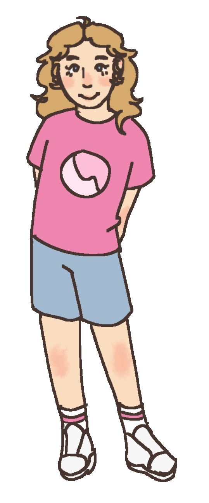

- Alias
- Liz
- Species
- Human
- Identity
- She/her, female
- Age
- 11 years
- Favorite food
- Cheesy potato casserole
- Favorite drink
- Strawberry milk
- Hobbies
- Reading, writing, drawing
- Favorite thing to do
- Write fantasy stories
Liz is Charlie's owner. She is very smart for her age and was pushed up a few grades in school because of it. In her free time, she enjoyed doing fun activities with Charlie, like dressing up, making art, and going on adventures. Liz has a good relationship with her parents, who made sure to comfort her deeply after Charlie disappeared. She now spends every moment waiting for her to turn up somewhere.
Trivia
- Liz is incredibly good with bartering and finances. She fully intends on collecting financial compensation from Brayden if Saturn falls off her hand-made solar system diorama.
- Liz used to be a lot more dependent on Charlie for her basic daily functioning. One day, her teacher confiscated the plush during a standardized test, leaving Liz distraught for the rest of the day.
- When the teacher didn't return Charlie at the end of the day, Liz's parents drove Liz right back to school after she came off the bus in tears to retrieve it. Though that was the last day Liz would bring Charlie with her to school, that was also the last day Mrs. Petersen questioned Liz that year.
Voice this character
Voice claim: Haley Tju as Marcy Wu
The voice claim is only a guide — you don't have to sound exactly like them. It's meant to show the character's general mood and tone.
Voice notes
- Liz is 11 — bright, articulate, and a little precocious, the kind of kid who has words for her feelings because she's a writer. She talks fast when she's excited and runs sentences together, fixating on specific details.
- The everyday lines are about charm and energy; the final line is about restraint.
- Most important: the grief should be quiet and a little stubborn, not theatrical. She's holding it together more than she should have to.
Audition Lines
TALKING TO CHARLIE (BEDTIME)
Okay, okay, you have to scooch over though, you're taking up the whole pillow. There. Perfect. (yawn) ...Mom said I did really good today. I didn't even tell her about the blue packet yet, that's for tomorrow. I'm saving it. Night, Charlie. Don't let the bedbugs bite. Not that you'd let them. You'd beat them up.
TELLING CHARLIE ABOUT HER DAY
So we're learning about x now? And x is like... a number, but you don't KNOW the number, you have to find it? It's like a mystery but it's math. And everybody else is still doing regular adding and I'm doing MYSTERIES. (beat) Oh — and Brayden kept poking my solar system, the one I MADE, with my own hands, took me three whole days — and I told him if Saturn falls off he is paying for it. With money. That he does not have.
LOOKING FOR CHARLIE
I left your spot open. On the pillow. In case. (pause) I'm not a baby about it. I just. I keep it open. ...You'd come back if you could. I know you would.